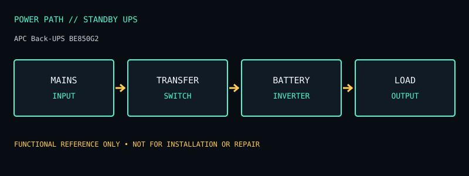

[ STANDBY UPS // IDENTIFIED MODEL ]
APC Back-UPS BE850G2
Standby 850 VA / 450 W UPS with nine outlets; battery-backup and surge-only outlet groups are not interchangeable. This record documents the named model only; check the unit nameplate and its matching manufacturer documentation before service or installation.

ARCHIVAL IDENTIFICATION: Preserve the complete SKU, suffix, region, date code, manual revision, installed battery part number and observed condition. Similar model names do not prove identical hardware.
Model specifications & service record
| Subcategory | Standby UPS |
|---|---|
| Topology / function | Standby (offline) UPS; inverter supplies the load after a transfer when utility power is outside its acceptable range. |
| VA and W ratings / outlets | 850 VA / 450 W; 120 V North American model. Nine NEMA 5-15R receptacles: six battery-backup + surge-protected and three surge-only. Two USB charging ports are not UPS signaling ports. |
| Battery / replacement | Internal sealed lead-acid battery, user replaceable with the manufacturer-specified cartridge; no external battery-pack connector is listed for this model. |
| Runtime / operating conditions | There is no single guaranteed runtime. APC publishes load-dependent estimates/runtime data; runtime decreases with greater connected watts and is also affected by battery age, temperature, and charge. Use the BE850G2-specific chart, not a VA-only estimate. |
| Interfaces / monitoring | Front status indicators and two USB-A charging ports; USB charging is distinct from USB communications/shutdown signaling. No network-management card is specified for this model. |
| Electrical safety / limits | 120 V regional product. Battery backup is limited to the six designated outlets; the remaining three provide surge protection only. Do not exceed the 450 W real-power rating. Use only the product-specific replacement battery and follow the manual’s replacement/disposal warnings. |
| Revision / variant identification | BE850G2 is distinct from prior BE850G / BE850G2-CA and other Back-UPS revisions. Confirm the full nameplate suffix and outlet map; the G2 manual and replacement-battery listing are the reference for this revision. |
Service & archival notes
- Record nameplate and battery labels before removal; separate measured behavior from manufacturer ratings and record load, input conditions, temperature and test date.
- Do not open an energized unit. Mains equipment and batteries can retain hazardous energy; have battery installation, disposal, and electrical work performed according to the product manual and local rules.
- For archival units, document missing covers, damaged cords, alarms, failed indicators, battery age/swelling/leakage, and any substituted part. Do not return a damaged unit to service.
- Product and manual links below are the primary reference for the named regional model. Verify exact revisions rather than transferring ratings from a similarly named SKU.
Manufacturer sources
- Manufacturer product specifications — APC Back-UPS BE850G2Model-specific ratings, regional identity, configuration and available documentation.
- Manufacturer manual / product documentation and runtime referenceUse the manual matching the complete model code and revision. Runtime statements above describe manufacturer chart/conditions where available, not a guaranteed result for an aged unit.